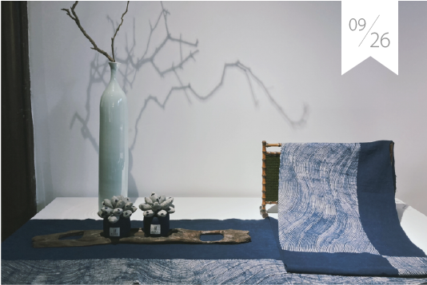
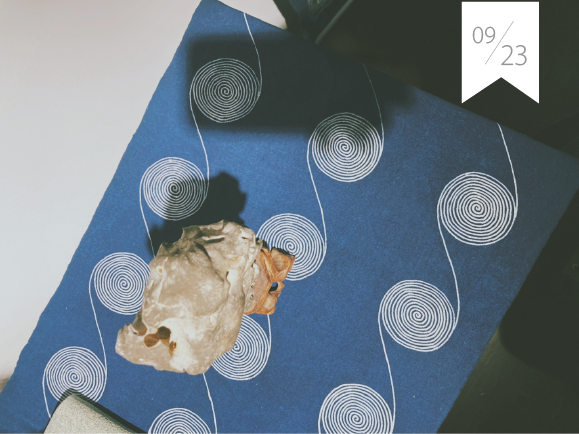
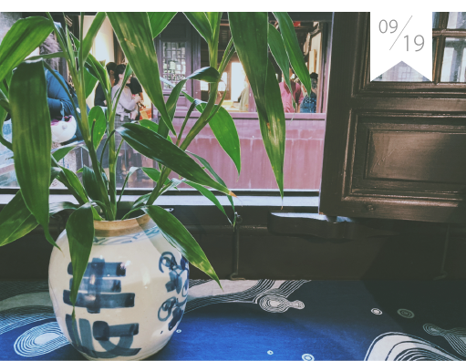
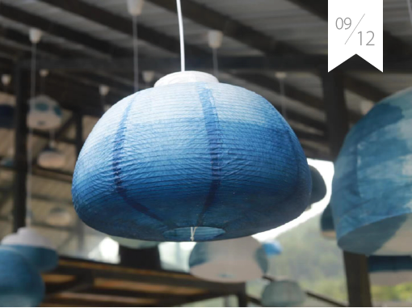
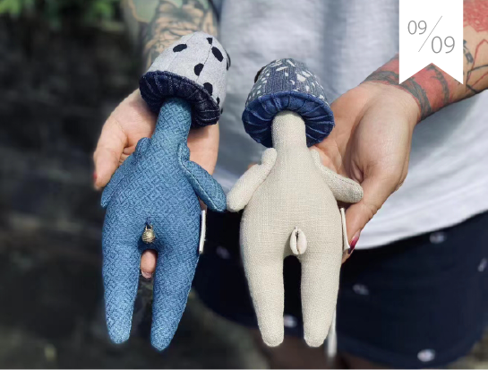
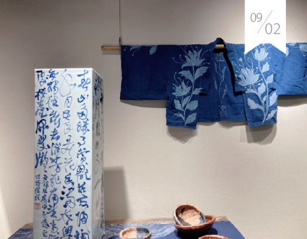

首页
蜡染简介
工艺流程
文创产品

[ 让蜡染在旅游中活起 ]
在国家对文博事业、非遗保护日益重视的环境背景下“博物馆+非遗”的模式优势凸显应利用好非遗元素，揉合博物馆文创衍生品的优秀设计开发具备文化性、知识性、实用性趣味性，受大众欢迎的文创产品

[ 安顺非遗进青博 ]
2020年9月5日下午，应安顺市非遗中心的邀请，贵州帛巴瑞文化发展有限公司有幸在青岛市博物馆为小朋友们带来一场全流程的蜡染体验。

[市工信委赴安顺市蜡染座谈]
市工信委总经济师、市蜡染发展领导小组办公室常务副主任杨守望率队赴安顺市蜡染协会考察，并召开以“旅游商品产业发展调研”为主题的座谈.

[ 王文珍教授蜡染技艺]
中国少数民族用品协会蜡染分会会员、安顺市蜡染协会理事、蜡染网合作伙伴、苗族蜡染人王文珍到紫云乡村帮助紫云布依族贫困妇女学习蜡染。

[87岁老人靠织布蜡染致富]
老人已经八十七岁高龄，是远近闻名的织布、蜡染能手，从小就学习画蜡花、做蜡染、织布、刺绣，作品远销欧美、东南亚等国。在当地政府的支持下，在自己家中开起了蜡染刺绣博物馆，这儿既是老人的家，又是苗族传统手工作坊，也是产品陈列室、展厅，免费开放参观。

[ 安顺非遗进青博 ]
2020年9月5日下午，应安顺市非遗中心的邀请，贵州帛巴瑞文化发展有限公司有幸在青岛市博物馆为小朋友们带来一场全流程的蜡染体验。
查看更多
花技艺,也是我国非物质文化遗产保护的对象.我们致力努力保护蜡染这一传统文化工艺的传承.
让世界看见中国的美
深入了解蜡染
发现更多美好
使用是最好的传承
有意见可以提出
皖ICP-1307327号 版权所有：浸染时光网 | 地址:安徽省合肥市蜀山区五里墩街道史河路八号